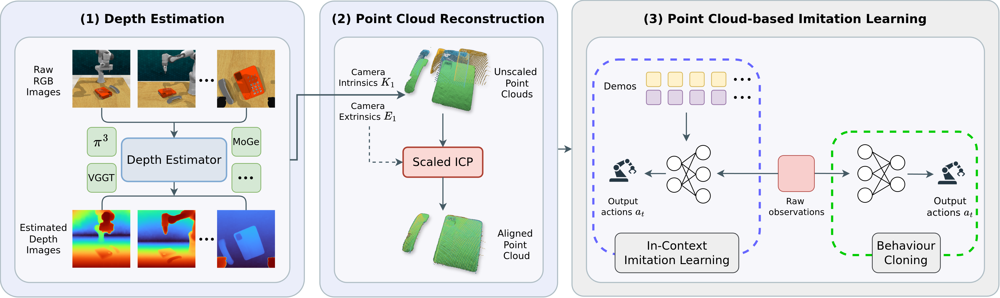

DEIL: Depth-Estimated Imitation Learning
To systematically study the role of depth estimation in imitation learning—particularly under challenging perceptual conditions—we propose a general framework DEIL. The framework consists of three main components: (1) a depth estimation module, (2) a point cloud reconstruction module, and (3) an imitation learning module. This modular design allows us to plug in different depth estimation methods while holding the learning framework fixed, enabling controlled evaluation of their impact on robot policy performance.

First, in the depth estimation stage, raw RGB images are passed through a depth estimator to produce corresponding depth maps. Second, using the camera intrinsics and extrinsics, unscaled point clouds are reconstructed from each camera view, and a Scaled ICP method is applied to align and merge them into a unified representation. Third, point cloud–based behaviour cloning or in-context imitation learning methods are trained on the reconstructed 3D representations generated by the previous modules.